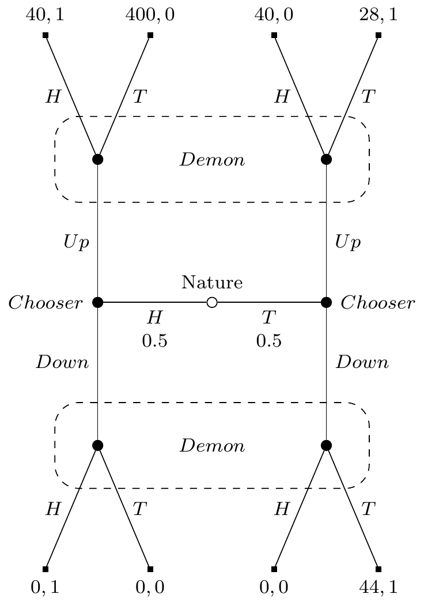

Gamified Decision Theory
There is a familiar complaint against Causal Decision Theory (CDT) that goes back to the modern origins of decision theory in the 1970s. Here is a recent version of it due to Ahmed and Price (2012). (I’ve slightly changed some of the wording, but otherwise this argument is quoted from page 16 of their paper.)
- In Newcomb problems, the average returns to one-boxing exceed that to two-boxing.
- Everyone can see that (1) is true.
- Therefore one-boxing foreseeably does better than two-boxing. (by 1, 2)
- Therefore Causal Decision Theory (CDT) is committed to the foreseeably worse option for anyone facing Newcomb’s problem.
Here’s what they, and many other proponents of Evidential Decision Theory (EDT) say follows from 4.
The point of the argument is that if everyone knows that the CDT-irrational strategy will in fact do better on average than the CDT-rational strategy, then it’s rational to play the CDT-irrational strategy. (Ahmed and Price 2012, 17)
This is what Lewis (1981b) called the “Why Ain’cha Rich” argument, and what following Bales (2018) I’ll call the WAR argument. I’m going to argue the last step of the WAR argument doesn’t follow. Or, at the very least, that proponents of EDT cannot coherently say that it follows. For there are cases where EDT foreseeably does worse than at least some prominent versions of CDT.1
1 Ian Wells (2019) has another case where EDT does worse than CDT. I think his case successfully shows that WAR arguments are no good, but not everyone is convinced, and one aim of this paper is to develop an anti-WAR argument that uses slightly fewer assumptions than Wells does. I’ll come back to Wells’s case in Section 3.
1 Coins and Signals
This example is a version of a signalling game of the kind introduced by Lewis (1969). And in particular it’s a version of the broadly adversarial kinds of signalling games that are central to the plot of Cho and Kreps (1987). Again, it will involve three stages.
At the first stage a fair coin is flipped, and the result shown to Chooser, but not to Demon. At the second stage, Chooser will choose Up or Down, and the choice will be publicly announced. At the third stage, Demon will try to guess what the coin showed. Demon knows the payoff table I’m about to show you, and is arbitrarily good at predicting Chooser’s strategy. That is, Demon can make accurate predictions of the form “If Heads, Chooser will make this choice, and if Tails, they will make that choice.” The payoffs to each player are a function of what happens at each of the three steps, and are given by table Table 1. (The payoffs here are all in utils.)
| Coin | Chooser | Demon | Chooser Payoff | Demon Payoff |
|---|---|---|---|---|
| H | U | H | 40 | 1 |
| H | U | T | 400 | 0 |
| H | D | H | 0 | 1 |
| H | D | T | 0 | 0 |
| T | U | H | 40 | 0 |
| T | U | T | 28 | 1 |
| T | D | H | 0 | 0 |
| T | D | T | 44 | 1 |
Figure 1 shows the game they are playing in tree form. We start at the middle, then move left or right depending on the coin flip, up or down depending on Chooser’s choice, and at one or other angle depending on Demon’s choice. Demons’s payoffs are just as you’d expect - they get rewarded iff they figure out how the coin landed. Chooser’s payoffs are more complicated, but the big thing to note is they get the biggest rewards if they manage to play Up while Demon makes an incorrect prediction.
I intend the Demon to be a rational player in a familiar game-theoretic sense. But to translate that into decision-theory terms, it’s important to make a few stipulations. Demon predicts Chooser’s strategy, that is Chooser’s plan about what to do if the coin lands Heads and what to do if the coin lands Tails, before the game starts. They make their decision about what to do after seeing Chooser’s actual choice, and updating on this information. If they predict that Chooser will do the same thing however the coin lands, they will flip their own coin to make a guess. So in that case it will be 50/50 whether Demon says Heads or Tails. Also, if they are surprised by what the Chooser does, i.e., if they had predicted Chooser would do one thing however the coin lands, and Chooser does the other thing, Demon will also flip their own coin to make a guess. Finally, Demon’s predictions are arbitrarily accurate. It makes the math easiest to assume Demon is correct with probability 1. Some people (myself among them) worry that stipulating the Demon succeeds with probability 1 might take us too close to case of backwards causation, and it’s very important that Chooser does not cause Demon’s prediction of a strategy. If you have that worry, say that Demon’s probability of successful prediction (whichever of the four strategies Chooser opts for) is 1 - ε, where ε is small enough that it doesn’t make a difference to what happens.
Now I want to analyse what Chooser will do if they follow EDT. It should be fairly clear that if the coin lands Heads, Chooser should say Up. The worst possible return from Up is 40, the best possible return from Down is 0. So that’s what any theory would recommend, and Chooser will do that whether or not they follow EDT. Indeed, this is so clear that we should assume Demon will predict that Chooser will play Up if the coin lands Heads. So what happens if the coin lands Tails? There are four possibilities here: the two things Chooser might do crossed with the two predictions Demon might make. The expected return to Chooser in these four possibilities is given in Table 2.
| Predict Up | Predict Down | |
|---|---|---|
| Up | 34 | 40 |
| Down | 18 | 44 |
The numbers in Table 2 aren’t entirely obvious; I’ll spell out how I got them.
- If Demon predicts Up, Demon will flip a coin. That’s because they’ll either get no information (if Chooser plays Up), or will be surprised (if Chooser plays Down). So Chooser will get the average of lines 5 and 6 in Table 1 if they play Up, and the average of lines 7 and 8 if they play Down.
- If Demon predicts Down, and Chooser plays Up, Demon will think (falsely) that the coin must have landed Heads, since Demon will have predicted that Chooser will only say Up if Heads. So Demon will say Heads. So we’ll definitely be at line 5 of Table 1, where Chooser gets 40.
- If Demon predicts Down, and Chooser plays Down, Demon will think (correctly) that the coin must have landed Tails. So Demon will say that, and we’ll be at line 8 of Table 1.
In a decision problem like Table 2, EDT says that all that matters is which of the top-left and bottom-right cells is largest. In this case, it’s the bottom-right, so EDT says to play Down. That isn’t absurd in this case; it gets the best possible payout of 44. So that’s our analysis of the game for EDT: Chooser plays Up if Heads, Down if Tails, gets 40 if Heads and 44 if Tails (plus/minus a small amount in expectation if Demon has ε chance of being wrong), and on average gets 42. What does CDT say? This needs a small detour, because ‘CDT’ has become an ambiguous signifier.
2 What is CDT
David Lewis (1981a) argued that all then-existing versions of CDT were little more than notational variants; they just differed on “emphasis and formulation” (Lewis 1981a, 5). Whether that was true then (and I have some doubts), it isn’t true now. There is a dizzying array of versions of CDT. To see the variation, it helps to consider a very abstract decision problem. Chooser has to choose Up or Down, arbitrarily accurate Demon has predicted that, and the payoffs are a function of the choice and the prediction. Here’s the abstract form of that problem.
| Predict Up | Predict Down | |
|---|---|---|
| Up | a | b |
| Down | c | d |
As noted in Section 1, EDT just cares about whether a or d is larger. What’s definitional of CDT is that if the prediction is causally independent of the choice, and a > c, and b > d, then Up is the right choice. But what if only one of those inequalities hold? In particular, if a > c, and d > b, what is to be done?2 There are, in the current literature, four different verdicts on this among people who agree with the fundamental claim that CDT makes.
2 I’m setting aside here questions about what to do if one or other of these is an equality, as well as the case where both these inequalities are reversed. These cases simply add to the variety of versions of CDT we’ll see below.
- Frank Arntzenius (2008) says that in this case CDT should follow EDT, and use the values of a and d to settle the choice.
- Ralph Wedgwood (2013), Dmitri Gallow (2020), Abelard Podgorski (2022), and David Barnett (2022) say that Chooser should choose Up or Down depending on which of a + b and c + d is larger.
- Jack Spencer (2023) says that in any such case, either Up or Down is rationally permissible.
- James Joyce (2012) says that what Chooser does here should be a function of how likely they think it is at the start of deliberation that they will choose Up or Down.
So these four families of theories differ on what to say about cases like Table 2. And further cases can, for some of them, reveal yet further differences.3 The best conclusion, I think, is that there are Causal Decision Theories, but no one Causal Decision Theory. CDT is a name for a family of views, not a particular view. There are some people in the literature who try to use the term for one particular one of these four views, but I can’t see what particularly motivates any one choice; they all look equally deserving of the term to me.
3 Personally I prefer a causal theory that resembles both Spencer and Joyce’s theories, without being the same as either.
This is an asymmetry between EDT and CDT. EDT is indeed a theory; it is the theory defended by Arif Ahmed (2012). But CDT is a family. So we shouldn’t compare EDT to CDT as such, we should compare it to a particular causal theory. And for this paper, I’ll focus on the theories listed in 2 above, and especially the version defended by Gallow.4
4 One clarificatory note. Gallow does not emphasise the comparison between a + b and c + d, but rather the comparison between a - c and d - b. This is just a notational variation, and I find my variant easier to use, if a little removed from the underlying philosophical motivation.
On Gallow’s view, Chooser should play Up in Table 2, since 34 + 40 > 18 + 44. So Chooser will always play Up. So Demon will always flip a coin to decide what to do. So all of the top four outcomes in Figure 1 are equally likely, and Chooser will on average get a return of 127. Since 127 /> 42, that means that on average if Chooser follows Gallow’s theory, they will on average be much richer than if they follow EDT. So if WAR arguments work, they show that EDT should be rejected in favor of Gallow’s theory.5
5 I suspect similar reasoning could be used to show that Spencer and Joyce’s views should be preferred to EDT on WAR grounds, but this would take some more work to show, because one has to deal with the complications arising from these views not being as decisive. Since I think WAR arguments fail, it’s not worth really going through these complications.
3 Wells and Ahmed
Ian Wells (2019) has earlier offered an example where EDT predictably does worse than (all versions of) CDT. His case involves a two-step game, where the EDTer will pay money at the first step to avoid making a decision at the second-step that they would now regret. Arif Ahmed (2020) responds that this is an unfair criticism. In Wells’s cases, he says, the EDT and CDT deciders are not in equivalent situations in round one. The EDTer knows that they will use EDT in later rounds, and the CDTer knows that they will use CDT in later rounds. So they have different evidence about what will happen at some later time in a way that’s relevant to their current decision, so it’s not a like-for-like comparison between CDT and EDT at the first stage.
The first thing to say is that I’m not sure this is a fair criticism of Wells. If WAR arguments work anywhere (something that Ahmed believes but Wells is only assuming for reductio), they are meant to work against CDT in Newcomb’s Problem. But in that case the CDTer and EDTer also have different subjective credences about the problem they face. The CDTer thinks that they have a transparent box and an empty box in front of them; the EDTer thinks that they have a transparent box and a box full of money in front of them. If differences in credences about what one will do mean that WAR arguments are unfair, then WAR arguments don’t work in the very case they are designed for. So I think Wells’s argument works, and that Ahmed’s criticism is
Set that aside though, because the main thing I want to add is that this example does not turn on differences in the subjective states of the possible choosers. Every chooser, whether they follow EDT, Gallow’s theory, or any other, will choose Up if the coin lands Heads. And this is common knowledge. Demon knows this, and Chooser knows that Demon knows it, and so on. The only difference is that if Chooser follows EDT, they will play Down if Tails. And that’s good as far as it goes; they’ll probably get the highest possible payoff they can get at that point. But it won’t make them rich in the long run. In the long-run, only theories, like Gallow’s, that make the Demon flip coins in either case will lead to maximal wealth.
4 Why The Examples Matter
This paper is very much not an argument against EDT; instead, it’s part of a war on WAR. WAR arguments overgenerate. They sometimes ‘show’ that EDT is better than Gallow-style CDT, and sometimes, as in Figure 1, ‘show’ the reverse. Even when they seem to favor a view like Gallow’s, it’s something of a coincidence that they do. Go back to Table 1, and vary the Chooser Payoff in line 2. As long as it is greater than 0, Gallow-style CDT will still say to choose Up either way. Changing line 2 can’t possibly make a difference to what to do if Tails, and as long as that payoff is greater than 0, Up is guaranteed to do better than Down if Heads. But if that payoff is less than 60, the long-run return of EDT (which is still 42) will be better than the long-run return of Gallow-style CDT.
So which theory is favored by WAR considerations turns on a factor, namely the payout at line 2, that’s not part of the decision process for either theory at the point they differ. The two theories differ on what to do if the coin lands Tails. And that turns entirely on the payouts in lines 5 to 8. Indeed, if one is a consequentialist in the sense popularised by Hammond (1988), what to do if the coin lands Tails can only turn on the payouts that are possible if the coin lands Tails. And all of the theories I’ve described so far are indeed consequentialist in this sense. So WAR considerations say we should judge theories on factors that consequentialism says aren’t relevant, i.e., on payouts at parts of the decision tree that Chooser knows not to obtain. So consequentialists shouldn’t rely on WAR arguments; they are inconsistent with consequentialism. Since EDT is a form of consequentialism, EDT can’t be defended with a WAR argument.
Now I haven’t said anything here about whether non-consequentialists can legitimately use WAR arguments. And this matters a bit more than it used to, because there are sophisticated defenders of non-consequentialism, such as Levinstein and Soares (2020).
Say something to finish
Acknowledge referees
Write a cover letter
References
Ahmed, Arif. 2012. “Push the Button.” Philosophy of Science 79 (3): 386–95. https://doi.org/10.1086/666065.
———. 2020. “Equal Opportunities in Newcomb’s Problem and Elsewhere.” Mind 129 (515): 867–86. https://doi.org/10.1093/mind/fzz073.
Ahmed, Arif, and Huw Price. 2012. “Arntzenius on ‘Why Ain’cha Rich?’.” Erkenntnis 77 (1): 15–30. https://doi.org/10.1007/s10670-011-9355-2.
Arntzenius, Frank. 2008. “No Regrets; or, Edith Piaf Revamps Decision Theory.” Erkenntnis 68 (2): 277–97. https://doi.org/10.1007/s10670-007-9084-8.
Bales, Adam. 2018. “Richness and Rationality: Causal Decision Theory and the WAR Argument.” Synthese 195 (1): 259–67. https://doi.org/10.1007/s11229-016-1214-x.
Barnett, David James. 2022. “Graded Ratifiability.” Journal of Philosophy 119 (2): 57–88. https://doi.org/10.5840/jphil202211925.
Cho, In-Koo, and David M. Kreps. 1987. “Signalling Games and Stable Equilibria.” The Quarterly Journal of Economics 102 (2): 179–221. https://doi.org/10.2307/1885060.
Gallow, J. Dmitri. 2020. “The Causal Decision Theorist’s Gudie to Managing the News.” The Journal of Philosophy 117 (3): 117–49.
Hammond, Peter J. 1988. “Consequentialist Foundations for Expected Utility.” Theory and Decision 25: 25–78. https://doi.org/10.1007/BF00129168.
Joyce, James M. 2012. “Regret and Instability in Causal Decision Theory.” Synthese 187 (1): 123–45. https://doi.org/10.1007/s11229-011-0022-6.
Levinstein, Benjamin Anders, and Nate Soares. 2020. “Cheating Death in Damascus.” Journal of Philosophy 117 (5): 237–66. https://doi.org/10.5840/jphil2020117516.
Lewis, David. 1969. Convention: A Philosophical Study. Cambridge: Harvard University Press.
———. 1981a. “Causal Decision Theory.” Australasian Journal of Philosophy 59 (1): 5–30. https://doi.org/10.1080/00048408112340011.
Podgorski, Aberlard. 2022. “Tournament Decision Theory.” Noûs 56 (1): 176–203. https://doi.org/10.1111/nous.12353.
Spencer, Jack. 2023. “Can It Be Irrational to Knowingly Choose the Best?” Australasian Journal of Philosophy 101 (1): 128–39. https://doi.org/10.1080/00048402.2021.1958880.
Wedgwood, Ralph. 2013. “A Priori Bootstrapping.” In The a Priori in Philosophy, edited by Albert Casullo and Joshua C. Thurow, 225–46. Oxford: Oxford University Press.
Wells, Ian. 2019. “Equal Opportunity and Newcomb’s Problem.” Mind 128 (510): 429–57. https://doi.org/10.1093/mind/fzx018.